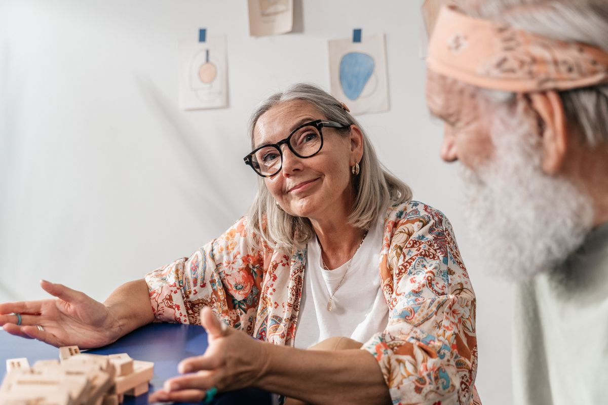

Companionship
Friendly visits that help people feel connected
Badwi Care and Companionship provides warm, reliable companionship for people who would benefit from conversation, company and gentle encouragement.
What companionship can include
Companionship visits are shaped around the person. Some people enjoy a chat over tea, while others like help with hobbies, board games, short walks, local outings or simply having someone kind nearby.
- Conversation and emotional wellbeing support
- Playing games, cards or doing hobbies
- Company during quiet parts of the day
- Encouragement to keep routines going
- Reassurance for family members
